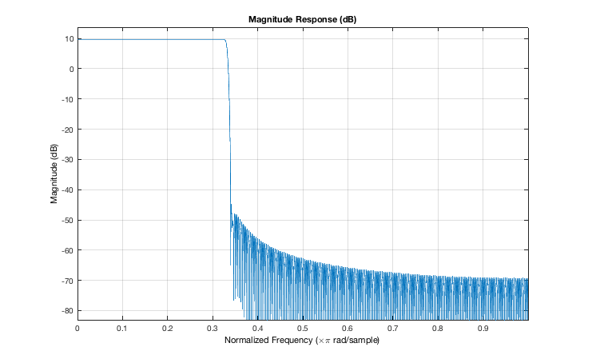
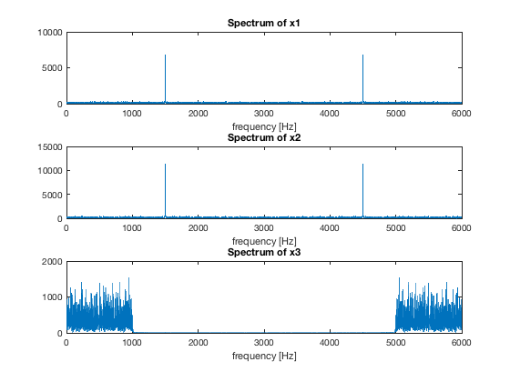

close; clear; clc;
% 1. Generate a signal x1 of sampling frequency fs = 6000 Hz, % of duration 2 s, and which is the superposition of a sinusoid of % frequency 1500 Hz and amplitude 2 with randomly generated noise of % amplitude 5. fs = 6000; %Hz sampling frequency duration = 2; % s duration f = 1500; %Hz, frequency of the sinusoind a = 2; %amplitude of the sinusoind a_n = 5; %amplitude of the noise t = 0:1/(fs-1):duration; % time samples s1 = a*sin(2*pi*f*t); %sinusoid noise = randn(size(s1)); noise = a_n * noise/max(abs(noise)); % normalize and multiply by 5 x1 = s1 + noise; %superposition
% 2. Generate a digital filter that produces an echo effect with % delay taps every 0.3 seconds and decreasing amplitudes: {1, 0.7, 0.5, 0.3}. % Apply it by convolution to the noisy signal x1 and call the output x2. echo = zeros(size(t)); %initialize at 0 echo(1) = 1; echo(round(0.3*fs)) = 0.7; % closest sample to 0.3 s echo(round(0.6*fs)) = 0.5; % closest sample to 0.6 s echo(round(0.9*fs)) = 0.3; % closest sample to 0.9 s x2 = conv(x1, echo); %x2 = x1;
% 3. Design a low-pass filter with a cut-off frequency of 1000 Hz. % Apply it to signal x2 and call the output x3. % Produce a plot of the magnitude response of the filter. % Will design a hamming-windowed sinc low-pass filter with a cut-off % frequency of 1000 Hz. % Generate the lowpass filter f_cutoff = 1000; % cutoff freq of the lowpass filter r = f_cutoff/(fs/2); % normalized cutoff frequency tap = -256:256; % This will be a 513-tap filter % Generate the coefficients of the filter B = sinc(r*tap).* hamming(length(tap))'; % hamming-windowed sinc %B = B/sum(B); %sometimes it is necessary to normalize the B-coeffs A = 1; %-> Since this is FIR % APPLY THE LOWPASS SINC FILTER: x3 = filter(B, A, x2); % -> Output signal. EQUIVALENT TO: y = conv(B, x); %Produce a plot of the magnitude response of the filter: fvtool(B,A);
4. Calculate and plot the magnitude spectra of the signals generated above: x1, x2, x3.
NFFT = 2^13; figure(2) X1 = abs(fft(x1, NFFT)); bins = linspace(0, fs, NFFT); % There are NFFT frequency bins, which are linearly spaced between 0 and fs Hz. subplot(311); plot(bins, X1); title ('Spectrum of x1') xlabel('frequency [Hz]') X2 = abs(fft(x2, NFFT)); subplot(312); plot(bins, X2); title ('Spectrum of x2') xlabel('frequency [Hz]') X3 = abs(fft(x3, NFFT)); subplot(313); plot(bins, X3); title ('Spectrum of x3') xlabel('frequency [Hz]')